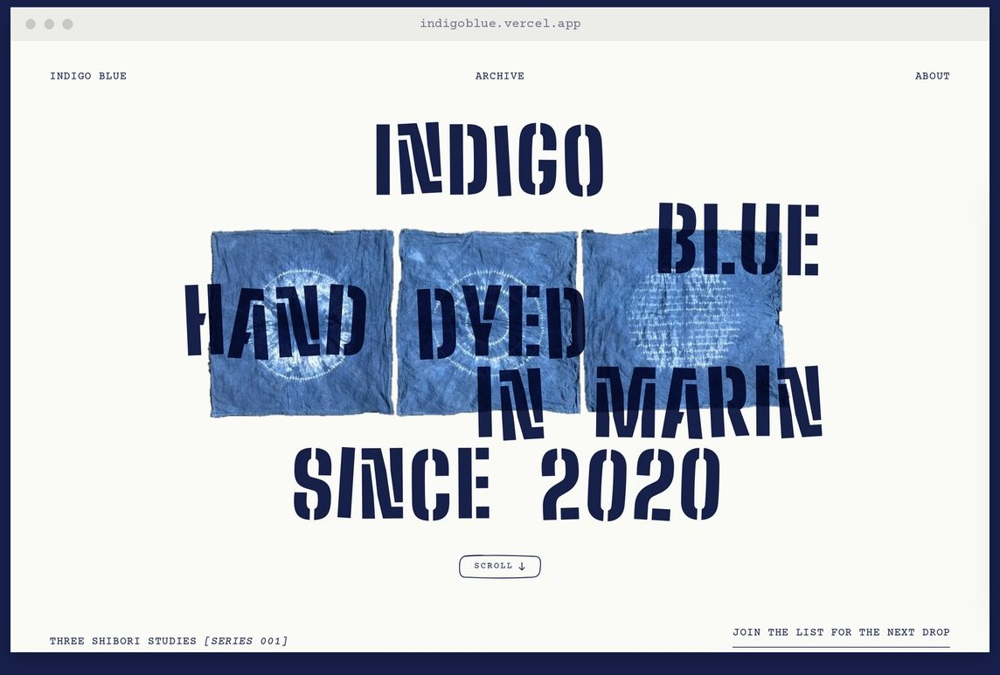

I design information into digital experiences people actually use.
Product Design · Visual Design · UX Research
University of Michigan School of Information '26


SAN FRANCISCO, CA
37.77°N, 122.41°W
37.77°N, 122.41°W


